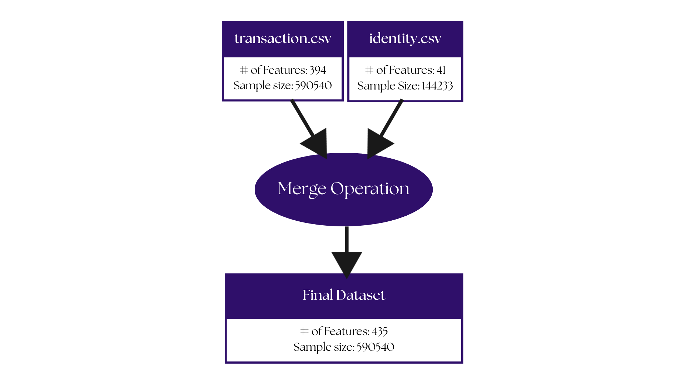

Dataset Overview
The fraud detection system analyzes two main types of data to identify suspicious patterns and protect users from fraudulent transactions.
Transaction Data
Records of financial transactions including purchases, money transfers, and service payments over a 6-month period.
Key Information Tracked:
- Payment Details: Amount, timing, and product/service type
- Card Information: Card type, issuing bank, and country
- Location Data: Billing address and geographic distances
- Contact Information: Email domains for both buyer and recipient
- Behavior Patterns: Time between transactions, matching information
- Advanced Analytics: Vesta's proprietary risk scoring features
Identity & Device Data
Digital footprint information collected during transactions to verify user identity and detect suspicious activity.
Security Information Collected:
- Device Information: Computer, phone, or tablet details
- Network Data: IP addresses, internet providers
- Digital Signatures: Browser, operating system, and version
- Connection Details: Proxy usage and network patterns
Note: Specific field names are masked to protect privacy and security systems.
How This Data Helps Detect Fraud
The system analyzes patterns across these datasets to identify unusual behavior, such as:
- Transactions from unfamiliar locations or devices
- Unusual spending patterns or amounts
- Suspicious timing between purchases
- Mismatched billing and device information
Data Flow Diagram
Figure 1. shows how raw transaction and identity data flows through the system to become actionable fraud detection insights.
Figure 1. Data flow diagram showing the transformation from raw transaction and identity data to a training dataset

Back to main page